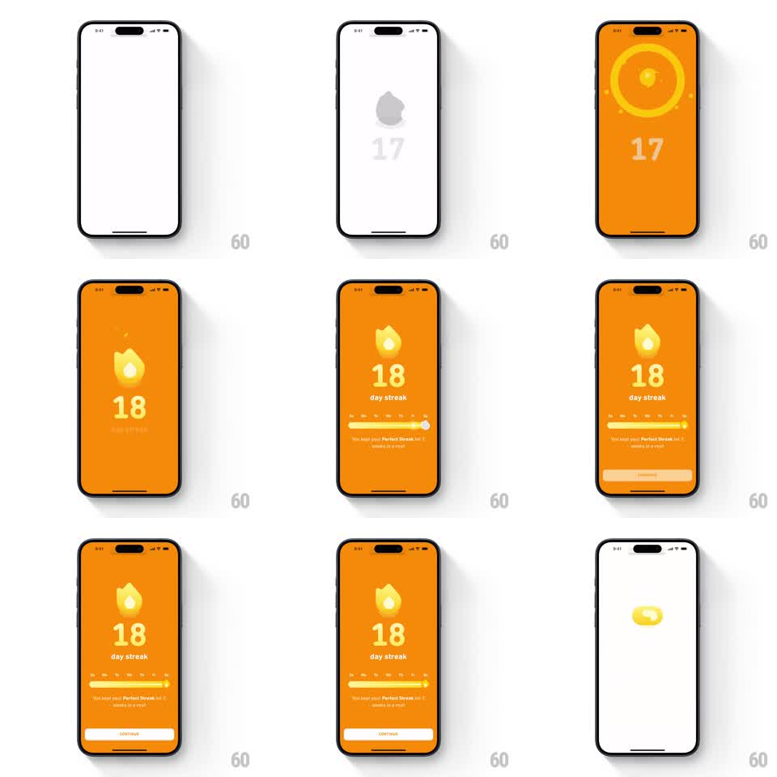

Media
Frame-by-frame

Rebuild this animation 1:1: Duolingo's 18-day streak celebration - the screen floods orange as a shockwave ring ignites the dim flame into a glowing white-core fire, the counter rolls 17 to 18, the week bar slides full, and the "Perfect Streak for 2 weeks in a row" caption and CONTINUE stack in.

Rebuild this animation 1:1: Duolingo's 18-day streak celebration - the screen floods orange as a shockwave ring ignites the dim flame into a glowing white-core fire, the counter rolls 17 to 18, the week bar slides full, and the "Perfect Streak for 2 weeks in a row" caption and CONTINUE stack in. ## Integration Integration: stack-agnostic spec - springs given as stiffness/damping, timed motions as duration + curve; map every value to your framework and animation library of choice. ## Scene Starts white with a gray flame and dim 17. End state: full orange screen - glowing flame with a white-hot core, large white "18", "day streak" label, weekday progress bar with bright fill, caption "You kept your Perfect Streak for 2 weeks in a row!", white CONTINUE pill. ## Motion spec Pattern: full-screen ignition with shockwave ring. - A thick shockwave ring expands from the flame (scale 0.4 -> 2.0, 400ms ease-out) while the background floods orange center-out (400ms ease-in) and small sparks scatter. - The flame ignites with a white core (crossfade 200ms) and pulses (scale 1.0 -> 1.15 -> 1.0, 300ms, repeated once). - Counter rolls 17 -> 18 (vertical digit slide, 250ms, scale pulse 1.0 -> 1.2 -> 1.0). - The week bar slides in from the left (300ms) and fills completely (600ms ease-out). - Caption fades up (200ms); CONTINUE pill slides up (280ms ease-out). - Exit: the composition compresses into a small yellow capsule (300ms) transitioning out. ## Calibration - The white-hot core is what separates this flame from lower milestones - keep the core bright against the orange field. - Orange flood and ring share the same origin point at the flame. ## Reduced motion Background fades to orange, flame and counter set instantly, bar fills over 300ms, caption and button fade in. ## Don't miss - The bar fills to full - this is a perfect week, unlike partial-week variants. - The exit capsule morph closes the loop back to the flame shape.